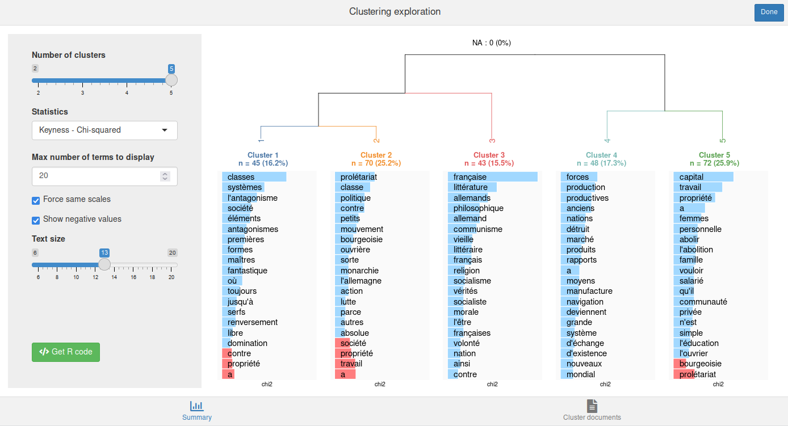
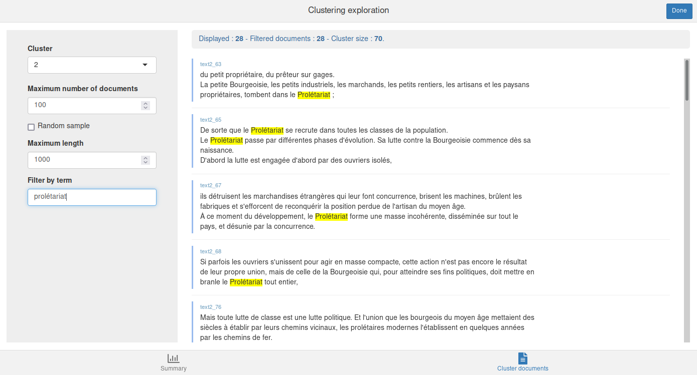

[fr] Utilisation de rainette
Julien Barnier
2022-02-06
Source:vignettes/introduction_usage.Rmd
introduction_usage.RmdPréparation du corpus
Importation
La première étape consiste à importer votre corpus dans R. Vous pouvez utiliser un corpus au format tm ou quanteda par exemple, ou bien utiliser la fonction import_corpus_iramuteq pour importer directement un corpus depuis un fichier texte au format Iramuteq. Dans ce cas vous obtiendrez un objet de type corpus du package quanteda. Les métadonnées éventuelles présentes dans le fichier (variables étoilées) sont importées en tant que métadonnées du corpus (variables de docvars(corpus)).
Pour ce document, on va importer le texte du Manifeste du parti communiste (Karl Marx et Friedrich Engels, 1848, source wikisource). Celui-ci est placé dans un fichier texte au format Iramuteq fourni avec rainette. Le corpus est composé de quatre documents, un document par partie de l’ouvrage.
## Warning in stringi::stri_info(): Your current locale is not in the list
## of available locales. Some functions may not work properly. Refer to
## stri_locale_list() for more details on known locale specifiers.
## Warning in stringi::stri_info(): Your current locale is not in the list
## of available locales. Some functions may not work properly. Refer to
## stri_locale_list() for more details on known locale specifiers.
## Import du corpus
fichier <- system.file("extdata", "manifeste_pc.txt", package = "rainette")
corpus <- import_corpus_iramuteq(fichier)On peut vérifier que notre corpus est bien constitué de quatre documents (l’introduction et les trois parties principales), et d’une variable de métadonnée :
corpus## Corpus consisting of 4 documents and 1 docvar.
## text1 :
## "Un spectre hante l’Europe, le spectre du communisme. Toutes ..."
##
## text2 :
## "L’histoire de toute société jusqu’à nos jours n’a été que l’..."
##
## text3 :
## "Quelle est la position des communistes vis-à-vis des proléta..."
##
## text4 :
## "Par leur position historique, les aristocraties françaises e..."Cette variable de métadonnée est justement la partie correspondant au texte :
docvars(corpus)## partie
## 1 intro
## 2 I
## 3 II
## 4 IIIDécoupage en segments
La méthode Reinert de classification s’applique plutôt à des segments de texte relativement courts, et non à des textes longs. Une première étape consiste donc à découper chaque texte du corpus en segments via la fonction split_segments. Ici on découpe en segments d’environ 40 mots (l’algorithme essaie de tenir compte de la ponctuation pour, par exemple, placer les césures entre des phrases ou au niveau d’une virgule).
corpus <- split_segments(corpus, segment_size = 40)Notre corpus est désormais constitué de 278 segments et 2 variables de métadonnées :
corpus## Corpus consisting of 278 documents and 2 docvars.
## text1_1 :
## "Un spectre hante l'Europe, le spectre du communisme. Toutes ..."
##
## text1_2 :
## "Quelle est l'opposition qui, à son tour, n'a pas relancé à s..."
##
## text1_3 :
## "à la face du monde entier, leur manière de voir, leurs buts ..."
##
## text2_1 :
## "L'histoire de toute société jusqu'à nos jours n'a été que l'..."
##
## text2_2 :
## "une guerre qui finissait toujours, ou par une transformation..."
##
## text2_3 :
## "Dans la Rome antique, nous trouvons des patriciens, des chev..."
##
## [ reached max_ndoc ... 272 more documents ]Si on regarde les nouvelles métadonnées, on peut voir que la variable partie a été dupliquée pour chaque segment correspondant, et une nouvelle variable segment_source indique le document d’origine du segment.
## partie segment_source
## 1 intro text1
## 2 intro text1
## 3 intro text1
## 4 I text2
## 5 I text2
## 6 I text2On peut aussi visualiser les premiers segments de texte calculés :
as.character(corpus)[1:2]## text1_1
## "Un spectre hante l'Europe, le spectre du communisme. Toutes les puissances de la vieille Europe se sont unies en une Sainte-Alliance pour traquer ce spectre : le Pape et le Czar, Metternich et Guizot, les radicaux de France et les policiers d'Allemagne.\nQuelle est l'opposition que n'ont pas accusée de communisme ses adversaires au pouvoir ?"
## text1_2
## "Quelle est l'opposition qui, à son tour, n'a pas relancé à ses adversaires de droite ou de gauche l'épithète flétrissante de communiste ?\nDeux choses ressortent de ces faits :\n1° Déjà le communisme est reconnu par toutes les puissances d'Europe comme une puissance ;\n2° Il est grand temps que les communistes exposent,"Calcul et traitement de la matrice termes-documents
L’étape suivante est de calculer la matrice termes-documents (dtm), grand tableau numérique avec les documents en lignes, les mots en colonnes, et comme valeurs le nombre d’occurrences de chaque mot dans chaque document.
Notre corpus étant au format quanteda, on va utiliser les fonctions de cette extension.
D’abord on calcule la dtm en convertissant le texte en minuscules, et en supprimant ponctuation, nombres, et les mots-outils français les plus courants :
tok <- tokens(corpus, remove_punct = TRUE, remove_numbers = TRUE)
tok <- tokens_remove(tok, stopwords("fr"))
dtm <- dfm(tok, tolower = TRUE)On va ensuite supprimer les termes apparaissant dans moins de 3 segments :
dtm <- dfm_trim(dtm, min_docfreq = 3)De nombreux autres traitements seraient possibles, mais on se contentera de cette matrice pour cet exemple.
Classification simple
Une fois notre matrice prête, on peut procéder à une première forme de classification : une classification descendante hiérarchique simple, calculée avec la fonction rainette. On va lui passer plusiurs arguments : le nombre maximal de classes souhaitées (k = 5) et le nombre minimal de termes pour qu’une classe soit découpée en deux à l’étape suivante de la classification (min_split_members = 10).
L’argument min_segment_size, lui, indique le nombre minimal de mots par segment. En effet, lors du calcul de la dtm, certaines formes (mots-outils, mots trop peu fréquents) ont été supprimées, nos segments peuvent donc varier en taille (entendue comme le nombre de mots encore présents). Avec min_segment_size = 10, les segments comportant moins de 10 formes sont regroupés avec le segment suivant ou précédent (si possible) jusqu’à atteindre la taille minimale souhaitée.
res <- rainette(dtm, k = 5, min_segment_size = 10, min_split_members = 10)L’objet résultat ne nous dit pas grand chose en lui-même :
res##
## Call:
## rainette(dtm = dtm, k = 5, min_segment_size = 10, min_split_members = 10)
##
## Cluster method : reinert
## Number of objects: 5Pour faciliter l’exploration des résultats, rainette propose une interface interactive qui peut être lancée avec la fonction rainette_explor :
rainette_explor(res, dtm, corpus)L’interface devrait ressembler à quelque chose comme ça :

Il est possible de modifier le nombre de classes, la statistique utilisée dans les graphiques (spécificité, termes les plus fréquents), etc. Par défaut, les graphiques sous chaque classe indiquent les termes les plus caractéristiques du groupe positivement (en bleu) ou négativement (en rouge et si vous avez coché la case Show negative values).
Cette interface vous permet d’expérimenter librement sur le nombre de classes et leur interprétation.
L’onglet Cluster documents permet à tout moment de visualiser les documents d’une classe. Vous pouvez également filtrer ces documents en saisissant un mot ou une expression régulière dans le champ Filter by term :

Dans l’onglet Summary, vous pouvez également cliquer sur Get R code pour obtenir le code R correspondant au graphique actuellement affiché, ainsi que la commande cutree qui vous permet de récupérer les groupes d’appartenance de chaque document du corpus, là aussi selon le nombre de groupes actuellement affichés.
## Clustering description plot
rainette_plot(res, dtm, k = 5, type = "bar", n_terms = 20, free_scales = FALSE,
measure = "chi2", show_negative = "TRUE", text_size = 11)
## Groups
cutree(res, k = 5)Vous pouvez par exemple utiliser l’appel de cutree pour ajouter comme nouvelle métadonnée du corpus le groupe d’appartenance de chaque segment pour la classification en 5 classes :
## partie segment_source groupe
## 1 intro text1 3
## 2 intro text1 3
## 3 intro text1 3
## 4 I text2 1
## 5 I text2 1
## 6 I text2 1Ici les classes ont attribuées aux segments, et non aux documents dans leur ensemble. La fonction clusters_by_doc_table permet d’afficher, pour chaque document (ici chacune des quatre parties du texte), le nombre de segments de chaque groupe :
clusters_by_doc_table(corpus, clust_var = "groupe")## # A tibble: 4 × 6
## doc_id clust_1 clust_2 clust_3 clust_4 clust_5
## <chr> <int> <int> <int> <int> <int>
## 1 text1 0 0 3 0 0
## 2 text2 14 28 5 36 20
## 3 text3 8 10 6 7 44
## 4 text4 23 32 29 5 8En ajoutant prop = TRUE, cette répartition peut être visualisée en pourcentages :
clusters_by_doc_table(corpus, clust_var = "groupe", prop = TRUE)## # A tibble: 4 × 6
## doc_id clust_1 clust_2 clust_3 clust_4 clust_5
## <chr> <dbl> <dbl> <dbl> <dbl> <dbl>
## 1 text1 0 0 100 0 0
## 2 text2 13.6 27.2 4.85 35.0 19.4
## 3 text3 10.7 13.3 8 9.33 58.7
## 4 text4 23.7 33.0 29.9 5.15 8.25À l’inverse, docs_by_cluster_table permet de visualiser, pour chaque groupe, le nombre et la proportion de documents d’origine comportant au moins un segment de ce groupe :
docs_by_cluster_table(corpus, clust_var = "groupe")## # A tibble: 5 × 3
## cluster n `%`
## <chr> <int> <dbl>
## 1 clust_1 3 75
## 2 clust_2 3 75
## 3 clust_3 4 100
## 4 clust_4 3 75
## 5 clust_5 3 75Classification double
Le deuxième type de classification proposé est une classification double : selon la méthode proposée par Max Reinert, on effectue deux classifications simples en faisant varier la taille minimale des segments, puis on “croise” les résultats de ces deux classifications pour déterminer de nouvelles classes, potentiellement plus robustes.
Une classification double utilise la fonction rainette2. Celle-ci peut se faire de deux manières. On peut d’abord effectuer les deux classifications simples, ici une avec une taille de segment minimale à 10, et une autre à 15 :
res1 <- rainette(dtm, k = 7, min_segment_size = 10, min_split_members = 10)
res2 <- rainette(dtm, k = 7, min_segment_size = 15, min_split_members = 10)Puis on utilise rainette2 sur ces deux objets résultats, en lui indiquant le nombre maximal de classes à calculer (argument max_k) et le nombre minimal de segments par classe (argument min_members) :
res <- rainette2(res1, res2, max_k = 7, min_members = 10)L’autre manière est d’appeler directement rainette2 sur notre matrice dtm, en lui indiquant avec les arguments min_segment_size1 et min_segment_size2 les deux tailles de segments souhaitées :
res <- rainette2(dtm, min_segment_size1 = 10, min_segment_size2 = 15, max_k = 7, min_members = 10)L’objet résultat est contient, pour chaque valeur de k, les partitions optimales trouvées et leurs caractéristiques. Là encore, une interface interactive est proposée pour visualiser et explorer ces résultats. Elle se lance via la fonction rainette2_explor :
rainette2_explor(res, dtm, corpus)
L’interface est très semblable à la précédente, sauf qu’il n’y a plus de dendrogramme mais à la place un diagramme en barre des effectifs des groupes. Soyez attentifs aux NA, qui représentent les segments non classés : contrairement à la classification simple, ils peuvent ici être assez nombreux.
Si certains segments n’ont pas été affecté à un groupe, vous pouvez utiliser rainette2_complete_groups pour les assigner au groupe le plus proche selon une méthode k-nearest neighbors (avec k=1) :
groupes <- cutree(res, k = 5)
groupes_complets <- rainette2_complete_groups(dtm, groupes)